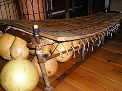

The balafon is a kind of wooden xylophone or percussion idiophone which plays
melodic tunes, and usually has between 16 and 27 keys. It has been played in
Africa since the 14th century; it originated in Mali, according to the Manding
history narrated by the griots.
Believed to have been developed independently of the Southern African and South
American instruments now called the marimba, oral histories of the balafon date
it to at least the rise of the Mali Empire in the 12th century CE. Balafon is a
Manding name, but variations exist across West Africa, including the balangi in
Sierra Leone and the gyil of the Dagara, Lobi and Gurunsi from Ghana, Burkina
Faso and Ivory Coast. Similar instruments are played in parts of Central Africa,
with the ancient Kingdom of Kongo denoting the instrument as palaku.
Records of the balafon go back to at least the 12th century CE. In 1352 CE,
Moroccan traveller Ibn Battuta reported the existence of the ngoni and balafon
at the court of Malian ruler Mansa Musa.
European visitors to West Africa described balafons in the 17th century largely
identical to the modern instrument. The Atlantic Slave Trade brought some
balafon players to the Americas. The Virginia Gazette records African-Americans
playing a barrafoo in 1776, which appears to be a balafon. Other North American
references to these instruments die out by the mid-19th century.
The balafon has seen a resurgence since the 1980s in the growth of African Roots
Music and World Music. Most famous of these exponents is the Rail Band, led by
Salif Keita. Even when not still played, its distinctive sound and traditional
style has been exported to western instruments. Maninka from eastern Guinea play
a type of guitar music that adapts balafon playing style to the imported
instrument.

Etymology:
In the Malinké language balafon is a compound of two words: balan is the name of
the instrument and fô is the verb to play. Balafon therefore is really the act
of playing the bala.
Bala still is used as the name of a large bass balafon in the region of Kolokani
and Bobo Dioulasso. These bala have especially long keys and huge calabashes for
amplification. Balani is then used as the name of the high pitched, small
balafon with small calabashes and short (3 to 4 cm long) keys. The balani is
carried with a strap and usually has 21 keys, while the number of keys on a bala
vary with region.
Construction:
A balafon can be either fixed-key (where the keys are strung over a fixed frame,
usually with calabash resonators underneath) or free-key (where the keys are
placed independently on any padded surface). The balafon usually has 17-21 keys,
tuned to a tetratonic, pentatonic or heptatonic scale, depending on the culture
of the musician.
The balafon is generally capable of producing 18 to 21 notes, though some are
built to produce many fewer notes (16, 12, 8 or even 6 and 7). Balafon keys are
traditionally made from béné wood, dried slowly over a low flame, and then tuned
by shaving off bits of wood from the underside of the keys. Wood is taken off
the middle to flatten the key or the end to sharpen it.
In a fixed-key balafon, the keys are suspended by leather straps just above a
wooden frame, under which are hung graduated-size calabash gourd resonators. A
small hole in each gourd is covered with a membrane traditionally of thin
spider's-egg sac filaments (nowadays more usually of cigarette paper or thin
plastic film) to produce the characteristic nasal-buzz timbre of the instrument,
which is usually played with two gum-rubber-wound mallets while seated on a low
stool (or while standing using a shoulder or waist sling hooked to its frame).
Regional traditions:
As the balafon cultures vary across West Africa, so does the approach to the
instrument itself. In many areas the balafon is played alone in a ritual
context, in others as part of an ensemble. In Guinea and Mali, the balafon is
often part of an ensemble of three, pitched low, medium and high. In Cameroon,
six balafon of varying size perform together in an orchestra, called a
komenchang. An Igbo variation exists with only one large tuned key for each
player. And while in most cases a single player hits multiple keys with two
mallets, some traditions place two or more players at each keyboard.
The Susu and Malinké people of Guinea are closely identified with the balafon,
as are the other Manding peoples of Mali, Senegal, and the Gambia. Cameroon,
Chad, and even the nations of the Congo Basin have a long balafon traditions.
Often, balafon players will wear belled bracelets on each wrist, accentuating
the sound of the keys.
In some cultures the balafon was (and in some still is) a sacred instrument,
playable only by trained religious caste members and only at ritual events such
as festivals, royal, funerial, or marriage celebrations. Here the balafon is
kept in a temple storehouse, and can only be removed and played after undergoing
purification rites. Specific instruments may be built to be only played for
specific rituals and repertoires. Young adepts are trained not on the sacred
instrument, but on free-key pit balafons.
Gyil:
The gyil is the name of a buzzing pentatonic balafon common to the Gur-speaking
populations in northern Ghana, Burkina Faso, southeastern Mali and northern
Ivory Coast in West Africa. Among Mande populations in Ghana like the Ligbi
(Numu), Bissa and Dyula, the same instrument is known as bala. The gyil is the
primary traditional instrument of the Dagara people of northern Ghana and
Burkina Faso, and of the Lobi of Ghana, southern Burkina Faso, and Ivory Coast.
The gyil is usually played in pairs, accompanied by a calabash gourd drum called
a kuor. It can also be played by one person with the drum and the stick part as
accompaniment, or by a soloist. Gyil duets are the traditional music of Dagara
funerals. The instrument is generally played by men, who learn to play while
young, however, there is no restriction on gender. It is also played by the
Gurunsi people of the Upper East Region of Ghana, as well as neighbouring
Gurunsi populations across the border in south and central Burkina Faso. A dance
related to the gyil is the Bewaa.
The gyil's design is similar to the balaba or balafon used by the Mande-speaking
Bambara, Dyula and Sosso peoples further west in southern Mali and western
Burkina Faso, as well as the Senoufo people of Sikasso, a region that shares
many musical traditions with those of northern Ivory Coast and Ghana. It is made
with 14 wooden keys of an African hardwood called liga attached to a wooden
frame, below which hang calabash gourds.[4] Spider web silk covers small holes
in the gourds to produce a buzzing sound and antelope sinew and leather are used
for the fastenings. The instrument is played with rubber-headed wooden mallets.
Cameroon:
During the 1950s, bars sprang up across Cameroon's capital to accommodate an
influx of new inhabitants, and soon became a symbol for Cameroonian identity in
the face of colonialism. Balafon orchestras, consisting of 3-5 balafons and
various percussion instruments became common in these bars. Some of these
orchestras, such as Richard Band de Zoetele, became quite popular in spite of
scorn from the European elite.
The middle of the 20th century saw the popularization of a native folk music
called bikutsi. Bikutsi is based on a war rhythm played with various rattles,
drums and balafon. Sung by women, bikutsi featured sexually explicit lyrics and
songs about everyday problems. In a popularized form, bikutsi gained mainstream
success in the 1950s. Anne-Marie Nzie was perhaps the most important of the
early innovators The next bikutsi performer of legendary stature was Messi Me
Nkonda Martin and his band, Los Camaroes, who added electric guitars and other
new elements.
Balafon orchestras had remained popular throughout the 50s in Yaoundé's bar
scene, but the audience demanded modernity and the popular style at the time was
unable to cope. Messi Martin was a Cameroonian guitarist who had been inspired
to learn the instrument by listening to Spanish language-broadcasts from
neighboring Equatorial Guinea, as well as Cuban and Zairean rumba. Messi changed
the electric guitar by linking the strings together with pieces of paper, thus
giving the instrument a damper tone that emitted a "thudding" sound similar to
the balafon.